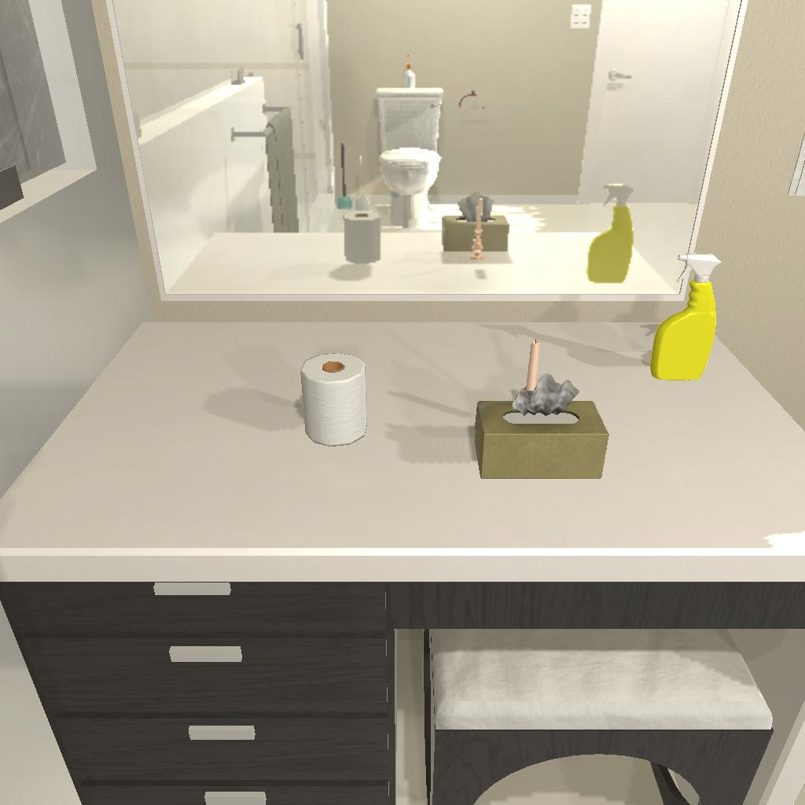
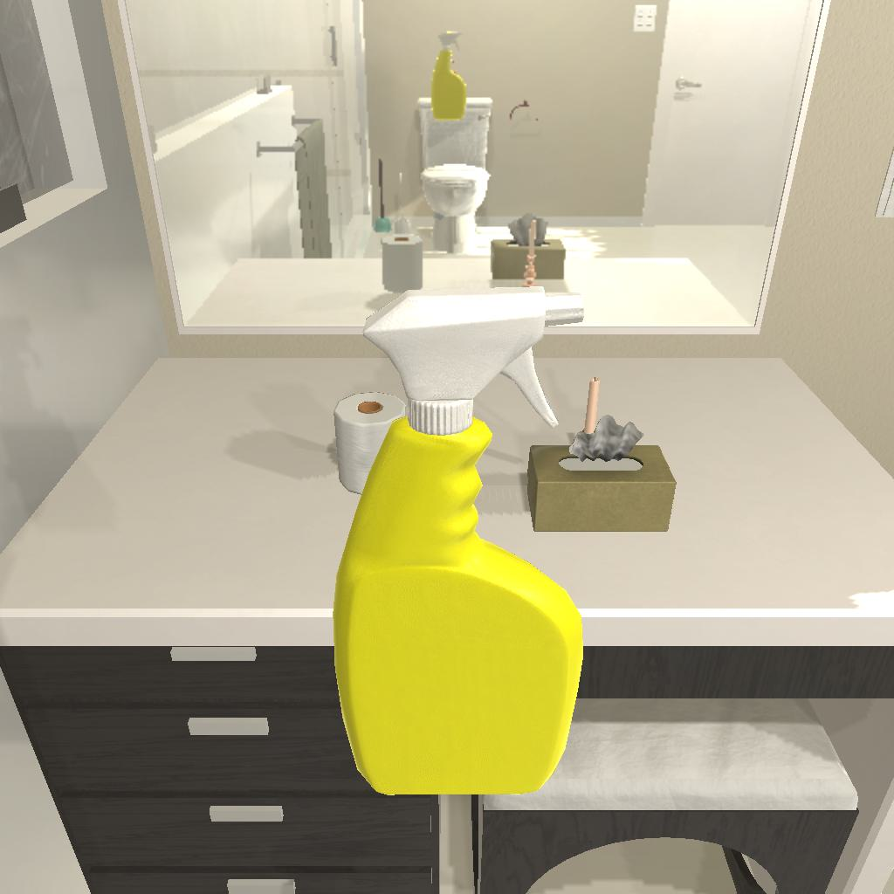

---------------------------------------------------------task: 28---------------------------------------------------------
--------------------------------------------------------------------------------------------------------------------------------------------------------------------
--------------------------------------------------------------------------------------------------------------------------------------------------------------------
Step:--------------------------------------------------------------------------5-------------------------------------------------------------------------------
----------------------------------------
VLM Prompt:
Image1:
Image2:
**Instruction**
1. Analyze the provided images to identify all visible household objects and compare the difference between images (e.h. whether the object is opened or not and taken on hand or not), focusing on those relevant to the task description "put two spraybottle in toilet."
2. Use the analysis of images and the task hint "The agent must find an object of the desired type, pick it up, find the correct location to place it, put it down there, then look for another object of the desired type, pick it up, return to previous location, and put it down there with the other object." to answer the question: what is the most reasonable action in the choices for the task description "put two spraybottle in toilet"?
3. Decide and write the answer using the template: The answer is: (i): , where i is the real number. If there is no desired object in images, search every place based on **Initial Observation** to find the object. And if no one is exactly correct, choose a similar answer.
**Initial Observation**
You are in the middle of a room. Looking quickly around you, you can see bathtub (1), bathtubbasin (1), cart (1), sink (1), garbagecan (1), sinkbasin (1), countertop (1), drawer (1-4), toilet (1), toiletpaperhanger (1)
**Answer Choices**
(1): go to bathtub 1
(2): go to bathtubbasin 1
(3): go to cart 1
(4): go to sink 1
(5): go to garbagecan 1
(6): go to sinkbasin 1
(7): go to drawer 1
(8): go to drawer 2
(9): go to drawer 4
(10): go to toilet 1
(11): go to toiletpaperhanger 1
(12): put spraybottle 1 in/on countertop 1
(13): examine spraybottle 1
(14): examine countertop 1
**Answer**
Let's think step by step by following the instructions.
----------------------------------------
----------------------------------------
Original Response:
First, we identify all visible household objects in the images. In both images, we can see a countertop with a toilet paper roll, a candle on a holder, and two spray bottles (one yellow and one white). The first image shows the yellow spray bottle standing on the countertop, while the second image shows the same spray bottle picked up, indicating that the agent has taken it in hand.
Next, we compare the difference between images. The primary difference is the position of the yellow spray bottle, which is standing on the countertop in the first image and held in hand in the second image. This change suggests that the agent has already picked up one spray bottle.
Considering the task description "put two spraybottle in toilet" and the task hint provided, the most reasonable next action for the agent would be to go to the location where the toilet is and place the spray bottle there. Since the agent is already holding one spray bottle, the agent does not need to look for another one at this moment.
Given the answer choices and the initial observation stating the visible objects in the room, the most reasonable action would be:
The answer is: (10): go to toilet 1
This action aligns with the task of placing the spray bottle in the toilet, and since the agent is already holding one spray bottle, it makes sense to go directly to the toilet to put it down there. Afterward, the agent can look for the second spray bottle to complete the task.
----------------------------------------
----------------------------------------
>>> Refine Original VLM Response and Get Pure Action: go to toilet 1
This action aligns with the task of placing the spray bottle in the toilet, and since the agent is already holding one spray bottle, it makes sense to go directly to the toilet to put it down there
----------------------------------------
-----------------------------------------------------------------
Running time: 14.579075574874878 seconds
Total Money: 14.502690000000003
-----------------------------------------------------------------
-----------------------------------------------------------------
Text Observation:Nothing happens.
-----------------------------------------------------------------
UNSUCCEED